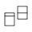
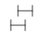

Help topics
Geoms
Geoms, short for geometric objects, describe the type of plot you will produce.
-
geom_abline(geom_hline, geom_vline)
Lines: horizontal, vertical, and specified by slope and intercept. -
geom_bar(stat_count)
Bars, rectangles with bases on x-axis -
geom_bin2d(stat_bin2d, stat_bin_2d)
Add heatmap of 2d bin counts. -
geom_blank
Blank, draws nothing. -
geom_boxplot(stat_boxplot)
Box and whiskers plot. -
geom_contour(stat_contour)
Display contours of a 3d surface in 2d. -
geom_count(stat_sum)
Count the number of observations at each location. -
geom_curve(geom_segment)
Line segments and curves. -

geom_crossbar(geom_errorbar, geom_linerange, geom_pointrange)
Vertical intervals: lines, crossbars & errorbars. -
geom_density(stat_density)
Display a smooth density estimate. -
geom_density2d(stat_density2d)
Contours from a 2d density estimate. -
geom_dotplot
Dot plot -

geom_errorbarh
Horizontal error bars -
geom_freqpoly(geom_histogram, stat_bin)
Histograms and frequency polygons. -
geom_hex(stat_bin_hex, stat_binhex)
Hexagon binning. -
geom_jitter
Points, jittered to reduce overplotting. -
geom_label(geom_text)
Textual annotations. -
geom_line(geom_path, geom_step)
Connect observations. -
geom_map
Polygons from a reference map. -
geom_point
Points, as for a scatterplot -
geom_polygon
Polygon, a filled path. -
geom_quantile(stat_quantile)
Add quantile lines from a quantile regression. -
geom_raster(geom_rect, geom_tile)
Draw rectangles. -
geom_ribbon(geom_area)
Ribbons and area plots. -
geom_rug
Marginal rug plots. -
geom_smooth(stat_smooth)
Add a smoothed conditional mean. -
geom_violin(stat_ydensity)
Violin plot.
Statistics
It's often useful to transform your data before plotting, and that's what statistical transformations do.
-
stat_ecdf
Empirical Cumulative Density Function -
stat_ellipse
Plot data ellipses. -
stat_function
Superimpose a function. -
stat_identity
Identity statistic. -
stat_qq(geom_qq)
Calculation for quantile-quantile plot. -
stat_summary_2d(stat_summary2d, stat_summary_hex)
Bin and summarise in 2d (rectangle & hexagons) -
stat_unique
Remove duplicates.
Scales
Scales control the mapping between data and aesthetics.
-
expand_limits
Expand the plot limits with data. -
guides
Set guides for each scale. -
guide_legend
Legend guide. -
guide_colourbar(guide_colorbar)
Continuous colour bar guide. -
lims(xlim, ylim)
Convenience functions to set the axis limits. -
scale_alpha(scale_alpha_continuous, scale_alpha_discrete)
Alpha scales. -
scale_colour_brewer(scale_color_brewer, scale_color_distiller, scale_colour_distiller, scale_fill_brewer, scale_fill_distiller)
Sequential, diverging and qualitative colour scales from colorbrewer.org -
scale_colour_gradient(scale_color_continuous, scale_color_gradient, scale_color_gradient2, scale_color_gradientn, scale_colour_continuous, scale_colour_gradient2, scale_colour_gradientn, scale_fill_continuous, scale_fill_gradient, scale_fill_gradient2, scale_fill_gradientn)
Smooth gradient between two colours -
scale_colour_grey(scale_color_grey, scale_fill_grey)
Sequential grey colour scale. -
scale_colour_hue(scale_color_discrete, scale_color_hue, scale_colour_discrete, scale_fill_discrete, scale_fill_hue)
Qualitative colour scale with evenly spaced hues. -

scale_identity(scale_alpha_identity, scale_color_identity, scale_colour_identity, scale_fill_identity, scale_linetype_identity, scale_shape_identity, scale_size_identity)
Use values without scaling. -
scale_manual(scale_alpha_manual, scale_color_manual, scale_colour_manual, scale_fill_manual, scale_linetype_manual, scale_shape_manual, scale_size_manual)
Create your own discrete scale. -
scale_linetype(scale_linetype_continuous, scale_linetype_discrete)
Scale for line patterns. -
scale_shape(scale_shape_continuous, scale_shape_discrete)
Scale for shapes, aka glyphs. -
scale_size(scale_radius, scale_size_area, scale_size_continuous, scale_size_discrete)
Scale size (area or radius). -
scale_x_discrete(scale_y_discrete)
Discrete position. -
labs(ggtitle, xlab, ylab)
Change axis labels and legend titles -
update_labels
Update axis/legend labels
Coordinate systems
Coordinate systems adjust the mapping from coordinates to the 2d plane of the computer screen.
-
coord_cartesian
Cartesian coordinates. -
coord_fixed(coord_equal)
Cartesian coordinates with fixed relationship between x and y scales. -
coord_flip
Flipped cartesian coordinates. -
coord_map(coord_quickmap)
Map projections. -
coord_polar
Polar coordinates. -
coord_trans
Transformed cartesian coordinate system.
Faceting
Facets display subsets of the dataset in different panels.
-

facet_grid
Lay out panels in a grid. -
facet_null
Facet specification: a single panel. -
facet_wrap
Wrap a 1d ribbon of panels into 2d. -
labeller
Generic labeller function for facets
Position adjustments
Position adjustments can be used to fine tune positioning of objects to achieve effects like dodging, jittering and stacking.
-
position_dodge
Adjust position by dodging overlaps to the side. -
position_fill(position_stack)
Stack overlapping objects on top of one another. -
position_identity
Don't adjust position -
position_nudge
Nudge points. -
position_jitter
Jitter points to avoid overplotting. -
position_jitterdodge
Adjust position by simultaneously dodging and jittering
Data
Data sets included in ggplot2 and used in examples
-
diamonds
Prices of 50,000 round cut diamonds -
economics(economics_long)
US economic time series. -
faithfuld
2d density estimate of Old Faithful data -
luv_colours
colors() -
midwest
Midwest demographics. -
mpg
Fuel economy data from 1999 and 2008 for 38 popular models of car -
msleep
An updated and expanded version of the mammals sleep dataset. -
presidential
Terms of 10 presidents from Eisenhower to Bush W. -
seals
Vector field of seal movements.
Annotation
Specialised functions for adding annotations to a plot
-
annotate
Create an annotation layer. -
annotation_custom
Annotation: Custom grob. -
annotation_logticks
Annotation: log tick marks -
annotation_map
Annotation: maps. -
annotation_raster
Annotation: High-performance rectangular tiling. -
borders
Create a layer of map borders.
Fortify
Fortify methods make it possible to use ggplot2 with objects of various types, not just data frames.
-
fortify
Fortify a model with data. -
fortify-multcomp(fortify.cld, fortify.confint.glht, fortify.glht, fortify.summary.glht)
Fortify methods for objects produced by -
fortify.lm
Supplement the data fitted to a linear model with model fit statistics. -
fortify.map
Fortify method for map objects. -
fortify.sp(fortify.Line, fortify.Lines, fortify.Polygon, fortify.Polygons, fortify.SpatialLinesDataFrame, fortify.SpatialPolygons, fortify.SpatialPolygonsDataFrame)
Fortify method for classes from the sp package. -
map_data
Create a data frame of map data.
Themes
Themes control non-data components of the plot
-
add_theme
Modify properties of an element in a theme object -
calc_element
Calculate the element properties, by inheriting properties from its parents -
element_blank
Theme element: blank. -
element_line
Theme element: line. -
element_rect
Theme element: rectangle. -
element_text
Theme element: text. -
ggtheme(theme_bw, theme_classic, theme_dark, theme_gray, theme_grey, theme_light, theme_linedraw, theme_minimal, theme_void)
ggplot2 themes -
is.rel
Reports whether x is a rel object -
is.theme
Reports whether x is a theme object -
margin
Define margins. -
rel
Relative sizing for theme elements -
theme
Set theme elements -
theme_update(theme_get, theme_set)
Get, set and update themes.
Plot creation
-
ggplot(ggplot.data.frame, ggplot.default)
Create a new ggplot plot. -
qplot(quickplot)
Quick plot -
+.gg(%+%, %+replace%)
Modify a ggplot or theme object by adding on new components. -
autoplot
Create a complete ggplot appropriate to a particular data type -
is.ggplot
Reports whether x is a ggplot object -
print.ggplot(plot.ggplot)
Draw plot on current graphics device.
Aesthetics
-
aes
Define aesthetic mappings. -
aes_(aes_q, aes_string)
Define aesthetic mappings from strings, or quoted calls and formulas. -
aes_all
Given a character vector, create a set of identity mappings -
aes_auto
Automatic aesthetic mapping -
aes_colour_fill_alpha(color, colour, fill)
Colour related aesthetics: colour, fill and alpha -
aes_group_order(group)
Aesthetics: group -
aes_linetype_size_shape(linetype, shape, size)
Differentiation related aesthetics: linetype, size, shape -
aes_position(x, xend, xmax, xmin, y, yend, ymax, ymin)
Position related aesthetics: x, y, xmin, xmax, ymin, ymax, xend, yend
ggproto
-
ggproto(ggproto_parent)
Create a new ggproto object -
print.ggproto
Print a ggproto object -
is.ggproto
Is an object a ggproto object? -
format.ggproto
Format a ggproto object
Other
-
alpha
Create a transparent colour. -
as.list.ggproto
Convert a ggproto object to a list -
cut_interval(cut_number, cut_width)
Cut up numeric vector into useful groups. -
geom_spoke(stat_spoke)
A line segment parameterised by location, direction and distance. -
ggsave
Save a ggplot (or other grid object) with sensible defaults -
graphical-units(.pt, .stroke)
Graphical units -
hmisc(mean_cl_boot, mean_cl_normal, mean_sdl, median_hilow)
Wrap up a selection of summary functions from Hmisc to make it easy to use -
labellers(label_both, label_bquote, label_context, label_parsed, label_value, label_wrap_gen)
Labeller functions -
last_plot
Retrieve the last plot to be modified or created. -
layer
Create a new layer -
mean_se
Calculate mean and standard errors on either side. -
resolution
Compute the "resolution" of a data vector. -
scale_continuous(scale_x_continuous, scale_x_log10, scale_x_reverse, scale_x_sqrt, scale_y_continuous, scale_y_log10, scale_y_reverse, scale_y_sqrt)
Continuous position scales (x & y). -
scale_date(scale_x_date, scale_x_datetime, scale_y_date, scale_y_datetime)
Position scale, date & date times -
stat_summary_bin(stat_summary)
Summarise y values at unique/binned x x. -
translate_qplot_base
Translating between qplot and base graphics -
translate_qplot_ggplot
Translating between qplot and ggplot -
translate_qplot_lattice
Translating between qplot and lattice -
txhousing
Housing sales in TX. -
update_geom_defaults(update_stat_defaults)
Modify geom/stat aesthetic defaults for future plots
Dependencies
- Imports: digest, grid, gtable, MASS, plyr, reshape2, scales, stats
- Suggests: ggplot2movies, hexbin, Hmisc, mapproj, maps, maptools, mgcv, multcomp, nlme, testthat, quantreg, knitr
Authors
- Hadley Wickham [aut, cre]
- Winston Chang [aut]